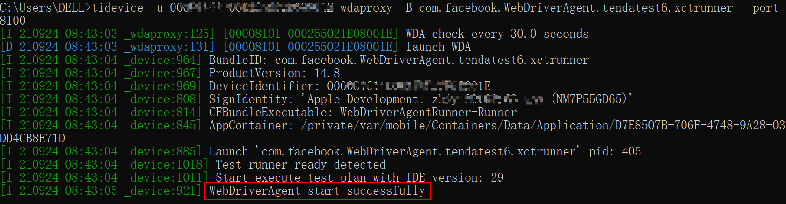
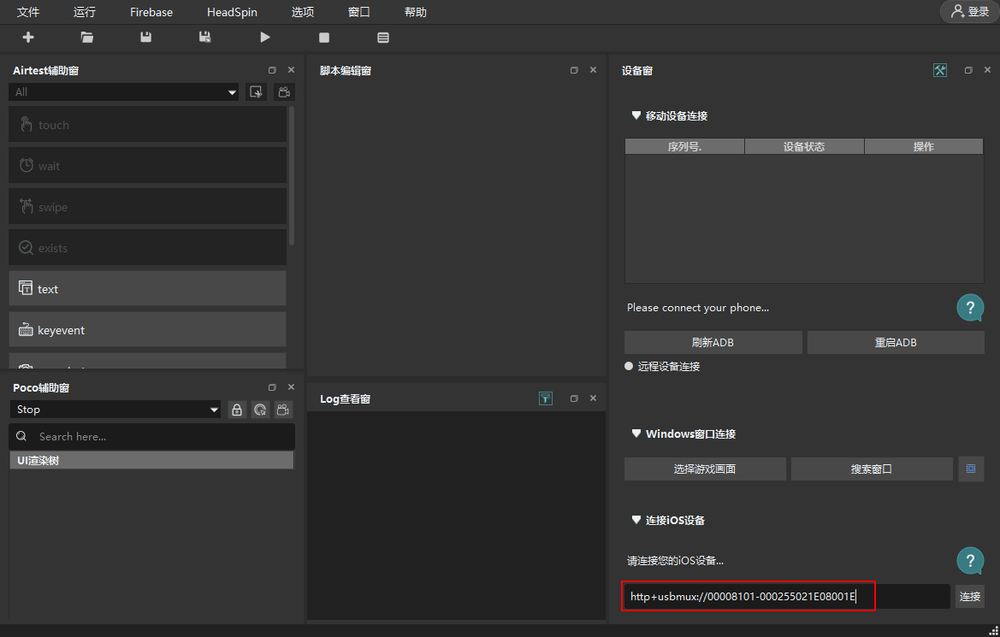
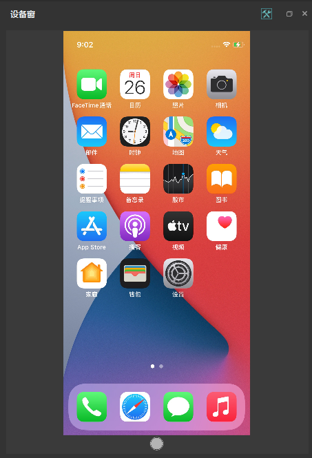
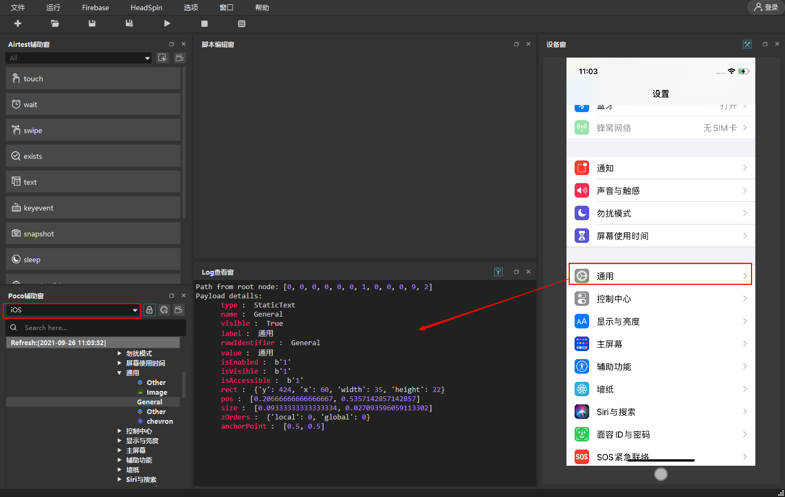
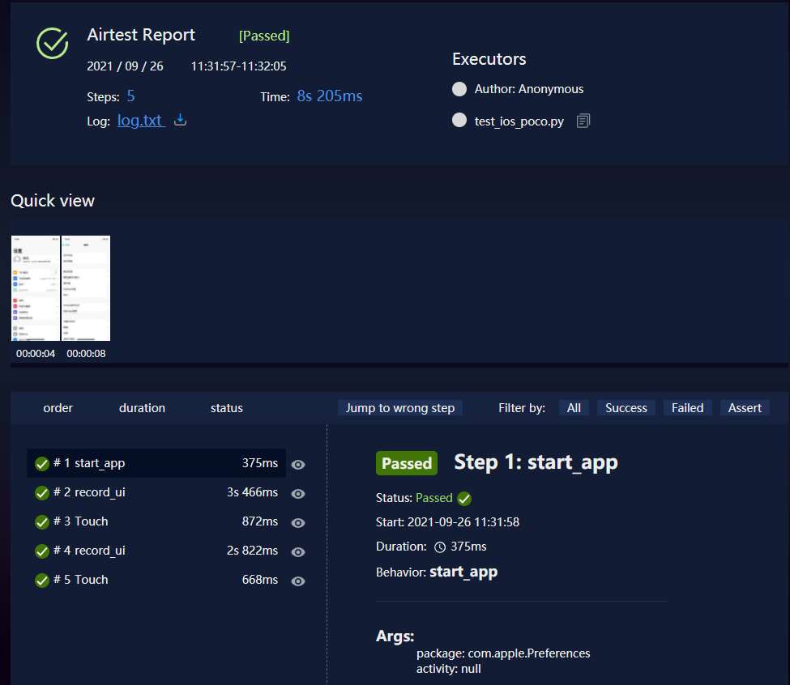

在Windows上实现iOS APP自动化测试：tidevice + WDA + facebook-wda / appium中介绍了使用阿里开源的tidevice 和 facebook-wda实现在Windows上进行iOS APP自动化测试。本文介绍如何使用tidevice + WDA + airtest进行iOS APP自动化测试。
环境准备
本文使用的环境如下：
- Python 3.7.6，Python版本需要3.6+
- tidevice==0.4.14
- WebDriverAgent，下载最新版本进行编译安装：https://github.com/appium/WebDriverAgent
- airtest==1.2.2
- iOS 设备： iPhone12 mini（14.6）
- Windows系统版本：Windows 10 家庭中文版
tidevice和WebDriverAgent介绍及安装可参考Windows上实现iOS APP自动化测试：tidevice + WDA + facebook-wda / appium。
使用USB连接设备，检测tidevice是否安装成功：1
$ tidevice list
airtest安装可参考：App自动化测试工具Airtest
airtest iOS 自动化
1. 启动WDA
获取设备的udid：1
$ tidevice list
查看wda的bundle id：1
$ tidevice applist
使用tidevice启动iOS设备上的WDA应用1
$ tidevice -u [设备 udid] wdaproxy -B [wda 的 bundle Id] --port 8100

如果你觉得每次进行自动化测试之前都要手动启动WDA比较麻烦，可以考虑使用vbs+bat的方式后台启动WDA，实现方式可参考VBSscript实现后台运行Windows bat脚本。
2. airtest 连接设备
如果要使用airtest IDE来编写自动化测试脚本，先连接 iOS 设备。
打开Airtest IDE，在右下角【连接iOS设备】中输入地址：
1 | http+usbmux://00008101-000255021E08001E |
00008101-000255021E08001E 是手机的udid，8100是使用tidevice启动WDA时设置的端口号。


可以使用init_device()或者connect_device()方法连接iOS设备：
1 | # 方法1 |
3. airtest 自动化
连接上iOS设备后就可以编写测试用例了， airtest使用的是图像识别的方法进行元素操作，元素操作方法可参考文章 App自动化测试工具Airtest 。
下面是一个示例脚本：打开【设置】
1 | #!/usr/bin/python3 |
poco iOS自动化
也可以使用poco进行UI元素操作，WDA启动和连接设备和前面介绍的【airtest iOS 自动化】一样。连接设备使用airtest提供的方法。
UI 元素可通过在AirtestIDE的Poco 辅助窗查看，注意要选择iOS。

poco元素操作方法可参考文章 App自动化测试工具Airtest 。
使用AirtestProject进行APP自动化测试时，通常将airtest和poco结合起来使用，下面是一个示例脚本：打开【设置】，检查软件版本为14.8
1 | #!/usr/bin/python3 |
查看生成的报告：

和facebook-wda库一起使用
facebook-wda、airtest和poco这3个测试库可以在一个测试项目中使用，下面结合pytest测试框架，使用这3个库实现APP自动化测试。
1 | from airtest.core.api import * |
airtest和facebook-wda初始化连接设备（创建session）后，它们向WDA发送命令互不影响。需要注意的是，Android APP自动化测试中，airtest、appium和uiautomator2之间是有冲突的，因为它们安装在手机上的uiautomator server不一样，且不能同时运行。
本文标题:Windows上实现iOS APP自动化测试：tidevice + WDA + airtest
文章作者:hiyo
文章链接:https://hiyongz.github.io/posts/app-testing-for-ios-app-testing-on-windows-with-airtest/
许可协议:本博客文章除特别声明外，均采用CC BY-NC-ND 4.0 许可协议。转载请保留原文链接及作者。